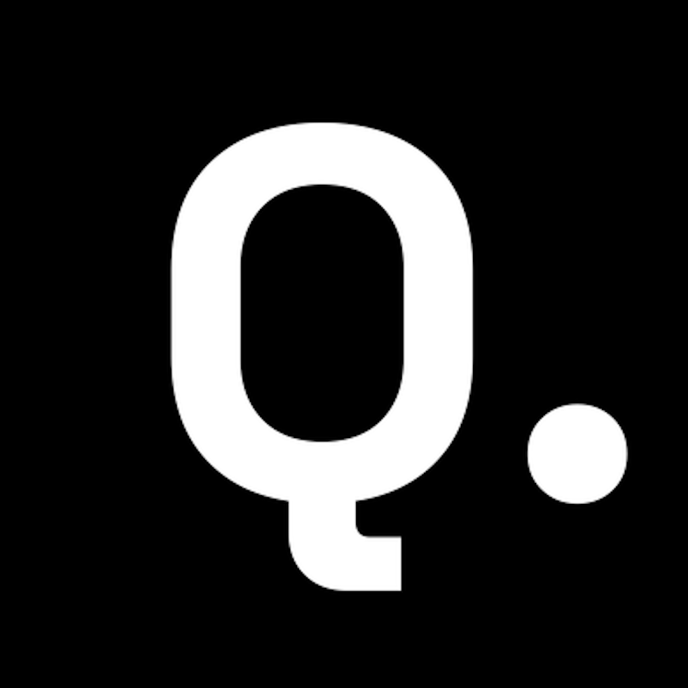

Querion is a read-only data analyst. Point it at your Postgres database and any read-only API, and it answers business questions like a senior analyst: the number, the insight, the exact query, and a chart. No API key. It plugs into any platform, and it talks back in your chat apps.
Most teams have the data but not the analyst time. Dashboards answer the questions you planned for; everything else becomes a ticket. Querion turns the long tail of "can someone just pull..." into a chat message, while staying safe enough to point at production.
It joins history in Postgres with live truth from your APIs in a single answer, picking the right source per question.
SELECT and WITH only, GET only with a per-source allowlist, and a firewall that refuses any request to change data.
Every figure comes with the exact query and a short glossary of what it means, so you can trust it and reuse it.
No API key to manage. Querion uses your locally authenticated Claude Code CLI as its brain, with Opus recommended.
If a platform has an API, Querion can read it. You do not write code. You give Querion three things, and it pulls the data and structures it into the answer for you.
sources: # Stripe, your billing, your 3PL, your CRM... any read API - name: stripe base_url: https://api.stripe.com auth_header: "Authorization: Bearer ${STRIPE_KEY}" safe_get: # only these read paths are allowed - ^/v1/charges - ^/v1/customers - ^/v1/invoices docs: docs/sources/stripe.md
Now a single question can span Postgres and Stripe together. Querion fetches from each source, reconciles them, and returns one structured answer with the table, the chart, and the query behind it. Repeat the block for every platform you run.
Some real APIs expose state-changing operations over GET. The per-source safe_get list means Querion can only ever reach the read paths you name. This is a default, not an afterthought.
Querion lives where your team already talks. A thin bridge forwards a message to Querion and posts the answer back, so the same analyst works in any instant-messaging app: Slack, WhatsApp, Microsoft Teams, Discord, or your own.
The bridge is small: it receives a message, calls Querion, and replies. Daily per-user limits, a write-request firewall, and read-only sources travel with Querion, so opening it to a channel stays safe.
From zero to asking questions in a few minutes. You need Python 3.9+, a Postgres database, and the Claude Code CLI logged in once on the host.
Clone the repo and install with the web UI, charts, and dotenv extras.
git clone https://github.com/anishfyi/querion.git cd querion pip install -e ".[all]"
Querion uses your local Claude Code session as its brain, so there is no API key. Run it once to authenticate.
claude # log in once (browser / your plan)Copy the examples, then set your company name, database DSN, and any API sources.
cp querion.example.yaml querion.yaml
cp .env.example .env
# edit .env with your read-only Postgres DSN + API keysYour strongest guarantee. Querion enforces read-only on top, but the role is the real backstop.
CREATE ROLE querion_ro LOGIN PASSWORD 'choose-a-strong-one'; GRANT CONNECT ON DATABASE yourdb TO querion_ro; GRANT USAGE ON SCHEMA public TO querion_ro; GRANT SELECT ON ALL TABLES IN SCHEMA public TO querion_ro; ALTER ROLE querion_ro SET default_transaction_read_only = on;
Validate the config and dependencies, ask a question in the terminal, or launch the web UI.
querion check # config + DB + CLI querion ask "orders and GMV last 7 days" querion serve # web UI on :8000
Full configuration reference, the API-source format, and the architecture are in the repo. Start from the README.
"It never writes" is true by design, with defense in depth. The only thing Querion ever produces is the answer.
A dedicated Postgres role with SELECT-only grants. Your strongest guarantee, and you own it.
A single statement, validated, with a write and DDL keyword denylist that also catches data-modifying CTEs.
HTTP egress is GET only, with a positive per-source allowlist for APIs that expose writes over GET.
If a user asks Querion to change data, the request is refused before it reaches any executor.
Querion is far sharper when it knows your domain: what "active customer" means, which table is the source of truth, how your metrics are defined. Pair it with Trove, a companion that builds and maintains a file-based semantic layer as you work and reloads it every session. Enable it in the config and Querion folds that layer into its knowledge, so every answer speaks your business language.
Explore Trove